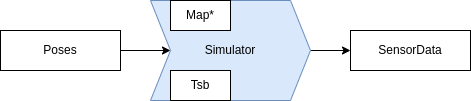
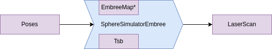
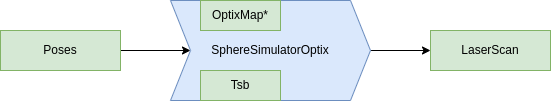
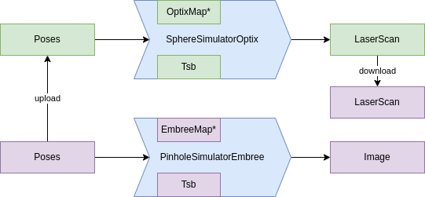

Problem Modelling
The general computing flow is as follows.

Tsb is the transform from sensor to base frame. Or in other words: The sensor pose relative to the robot base. The map can be either a pointer to an EmbreeMap or OptixMap. The Prefix of the Simulator is either Embree for CPU computation or Optix for GPU computation. The suffix of the Simulator is dependent on which sensor model you want to simulate. A few examples:
SphereSimulatorEmbree- Simulate a velodyne on CPUPinholeSimulatorOptix- Simulate a depth camera on GPUO1DnSimulatorOptix- Simulate a customO1DnModelon GPU
Example 1: Simulate 1000 3D LiDaRs on CPU
Now we want to construct the following pipeline.

#include <rmagine/simulation/SphereSimulatorEmbree.hpp>
using namespace rmagine;
SphereSimulatorEmbreePtr construct_simulator(std::string path_to_mesh)
{
// Default construct the SphereSimulatorEmbree as shared pointer
SphereSimulatorEmbreePtr sim = std::make_shared<SphereSimulatorEmbree>();
EmbreeMapPtr map = import_embree_map(path_to_mesh);
sim->setMap(map);
// Define sensor model
SphericalModel model;
// TODO: fill with model specific parameters
sim->setModel(model);
// Set static transform between sensor and base (optional)
Transform Tsb;
Tsb.setIdentity();
sim->setTsb(Tsb);
return sim;
}
int main(int argc, char** argv)
{
// Load map and set map pointer to simulator
std::string path_to_mesh = argv[1];
SphereSimulatorEmbreePtr sim = construct_simulator(path_to_mesh);
// Define 1000 poses to simulate from
Memory<Transform, RAM> poses(1000);
for(int i = 0; i<poses.size(); i++)
{
poses[i].setIdentity();
}
// add your desired attributes at intersection here
using ResultT = Bundle<
Ranges<RAM>
>;
// Result: Simulate Ranges
ResultT res = sim->simulate<ResultT>(poses_);
// res.ranges holds a buffer to the ranges
return 0;
}
Example 2: Simulate 1000 LiDaRs on GPU
Now we want to construct the following pipeline.

The green cells are memory objects on GPU as you see in the following code snippet.
#include <rmagine/simulation/SphereSimulatorOptix.hpp>
using namespace rmagine;
SphereSimulatorOptixPtr construct_simulator(std::string path_to_mesh)
{
// Default construct the SphereSimulatorEmbree as shared pointer
SphereSimulatorOptixPtr sim = std::make_shared<SphereSimulatorOptix>();
OptixMapPtr map = import_optix_map(path_to_mesh);
sim->setMap(map);
// Define sensor model
SphericalModel model;
// TODO: fill with model specific parameters
sim->setModel(model);
// Set static transform between sensor and base (optional)
Transform Tsb;
Tsb.setIdentity();
sim->setTsb(Tsb);
return sim;
}
int main(int argc, char** argv)
{
// Load map and set map pointer to simulator
std::string path_to_mesh = argv[1];
SphereSimulatorOptixPtr sim = construct_simulator(path_to_mesh);
// Define 1000 poses to simulate from
Memory<Transform, RAM> poses(1000);
for(int i = 0; i<poses.size(); i++)
{
poses[i].setIdentity();
}
// upload from CPU to GPU
Memory<Transform, VRAM_CUDA> poses_ = poses;
// add your desired attributes at intersection here
using ResultT = Bundle<
Ranges<VRAM_CUDA>
>;
// Result: Simulate Ranges
ResultT res = sim->simulate<ResultT>(poses_);
// download from GPU to CPU
// or use CUDA buffer for other computations
Memory<float, RAM> ranges = res.ranges;
return 0;
}
Example 3: Simulate 1000 LiDaRs on GPU and Images on CPU
Now we want to construct the following pipeline.

#include <rmagine/simulation/SphereSimulatorOptix.hpp>
#include <rmagine/simulation/PinholeSimulatorEmbree.hpp>
using namespace rmagine;
int main(int argc, char** argv)
{
// Load map and set map pointer to simulator
std::string path_to_mesh = argv[1];
// CONSTRUCTION PART
// Define Simulators
SphereSimulatorOptix lidar_sim_gpu;
PinholeSimulatorEmbree dcam_sim_cpu;
// Load and set maps
OptixMapPtr map_gpu = import_optix_map(path_to_mesh);
EmbreeMapPtr map_cpu = import_embree_map(path_to_mesh);
lidar_sim_gpu.setMap(map_gpu);
dcam_sim_cpu.setMap(map_cpu);
SphericalModel lidar_model;
PinholeModel dcam_model;
// TODO: Define models
lidar_sim_gpu.setModel(lidar_model);
dcam_sim_cpu.setModel(dcam_model);
// Define static transforms (optional)
Transform T_lidar_base;
Transform T_dcam_base;
lidar_sim_gpu.setTsb(T_lidar_base);
dcam_sim_cpu.setTsb(T_dcam_base);
// SIMULATION PART
Memory<Transform, RAM> poses(1000);
// TODO: fill poses
// upload from CPU to GPU
Memory<Transform, VRAM_CUDA> poses_ = poses;
// Simulate Depth cameras ranges on CPU
using ResultT_RAM = Bundle<
Ranges<RAM>
>;
ResultT_RAM dcam_res
= dcam_sim_cpu.simulate<ResultT_RAM>(poses);
// Simulate LiDaRs ranges on GPU
using ResultT_VRAM = Bundle<
Ranges<VRAM_CUDA>
>;
ResultT_VRAM lidar_res
= lidar_sim_gpu.simulate<ResultT_VRAM>(poses_);
// Download lidar ranges
Memory<float, RAM> lidar_ranges = lidar_res.ranges;
// Results are in dcam_res.ranges and lidar_ranges
return 0;
}